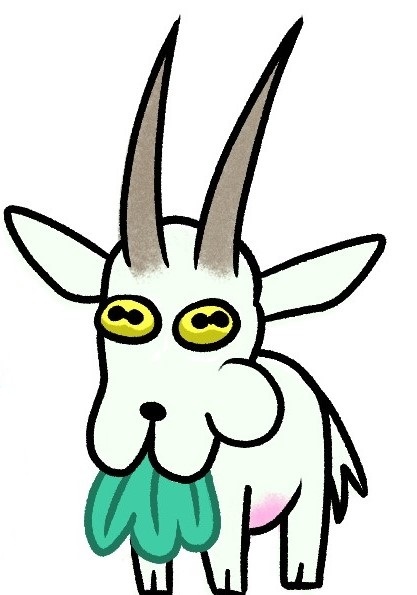

Portfolio
Contact
Siisar Salad is an illustration studio based in Madrid, Spain. We focus on illustrating & animating for publishing, editorial, advertising and multimedia, doing our best to deliver more than just a message.